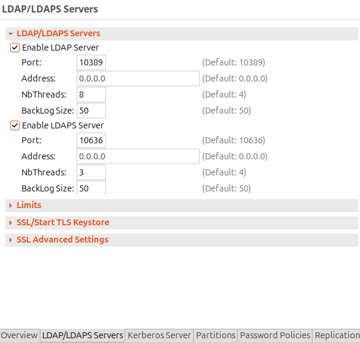
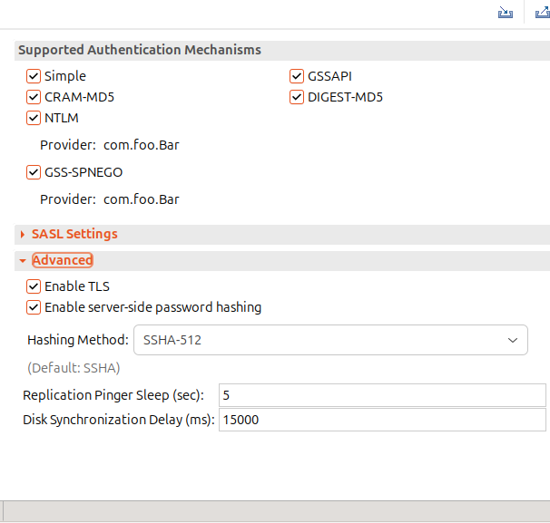

ApacheDS 2.0
Downloads
Documentation
- Basic User Guide
- Advanced User Guide
- Developer Guide
- Kerberos User Guide
- Configuration
- JavaDocs
- Cross-Reference
Support
Community
About Apache
4.1.1.4 - Server side password hashing
By default ApacheDS does not store user’s password hashed. From the security point of view, this is not a good thing.
For this reason, a mechanism has been added that can automatically hash passwords that are added or modified, beside the standard PasswordModify extended operation.
Any entry containing the userPassword attribute will automatically sees its values hashed accordingly to an algorithm that can be chosen.
We use a specific interceptor (passwordHashing) that needs to be activated to enable this feature. This can be done using Apache Directory Studio, by clicking in the Enable server-side password hashing box in the LDAP/LDAPS Servers tab, section advanced:


The hashing method can be one of:
- SHA
- SSHA (salted SHA)
- MD5
- SMD5
- CRYPT
- SHA-256
- SSHA-256
- SHA-384
- SSHA-384
- SHA-512
- SSHA-512
- PKCS552
Once restarted, any entry containing a userPassword attruibute modification or addition will get the associated value hashed.
Another option would be to inject the interceptor configuration in the server configuration, using a LDIF file like:
# turn on Server-side password hash
dn: ads-interceptorId=passwordHashingInterceptor,ou=interceptors,ads-directoryServiceId=default,ou=config
changetype: modify
replace: ads-enabled
ads-enabled: TRUE
-
replace: ads-hashalgorithm
ads-algorithm: <the selected algorithm>
-